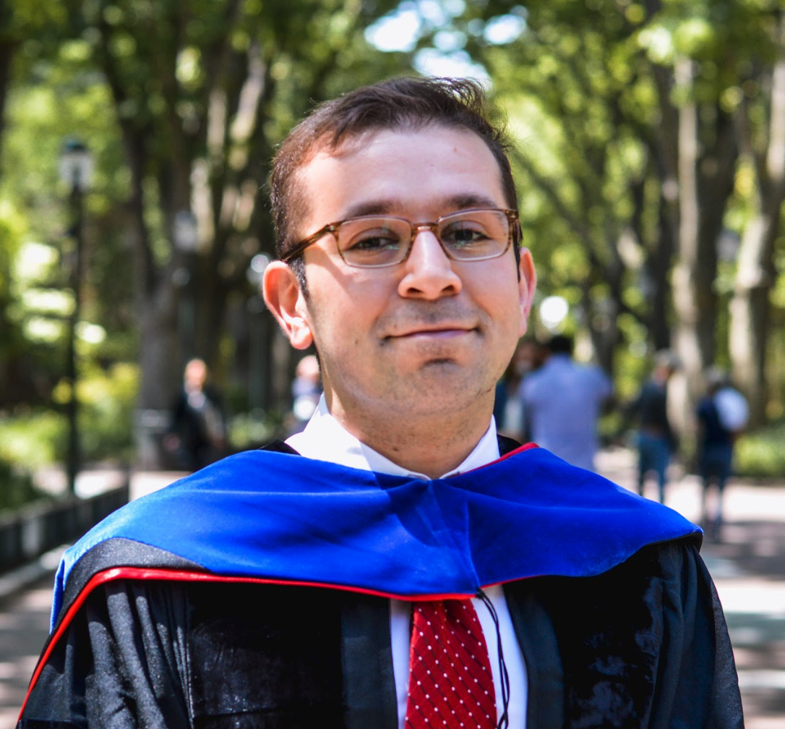

|
|
 |
Daniel Khashabi (دانیال خشابی)
Young Investigator
Allen Institute for Artificial Intelligence
2157 N Northlake Way Suite 110, Seattle, WA 98103 | Email: danielk ¯\_(ツ)_/¯ allenai.org
I am a post-doctoral researcher at Allen Institute for AI, Seattle. I am affiliated with the Mosaic team and I frequently collaborate with other teams like AllenNLP and Aristo.
Prior to this, I was a doctoral student at Computer and Information Sciences at the University of Pennsylvania (2017-2019) and at the University of Illinois, Urbana-Champaign (2012-2016), under Prof. Dan Roth.
I got my B.Sc. from Tehran Polytechnic (2008-2012) where I was greatly fortunate to work with Prof. Hamid Sheikhzadeh.
|
Research Themes
My research focuses on the computational foundations of intelligent behavior, through the lens of natural language.
My goal is to explore the different ways in which we can develop and evaluate systems that understand and reason with (and about) natural language in different contexts.
I mostly identify with natural language processing (ACL, NAACL, EMNLP) and artificial intelligence communities (AAAI, IJCAI) and, to some extent, with the machine learning community (NeurIPS, ICML).
Here are several themes I am interested in:
Generalism*:
AlphaGo may be the world champion at Go, although it can't solve any other problem!
How can we incentivize building models that can address a broader scope of tasks and abilities? (papers: ACL’22, EMNLP-Findings’20)
Reasoning:
I view “reasoning” as the process of using “reasons” for explaining or justifying decisions.
How can we enable machines to communicate via reasons, for a broad-ranging spectrum of tasks? (papers: TACL’21, NAACL’21)
Human-AI interaction: The increased deployment of AI in human-facing applications requires addressing many challenges:
How can we bake in transparency in models so human operators can contextualize system output? Can we make such transparency into a truly democratic oversight of systems and their algorithmic biases? Can we build systems that can recourse when there is harm to those that are marginalized? Can we build systems that reduce our socio-political divisions? (papers: EMNLP’20, NAACL’19)
Select Talks
Publication
Disclaimer: This material is presented to ensure the timely dissemination of scholarly works. Copyright and all rights therein are retained by authors or by other copyright holders. All persons copying this information are expected to adhere to the terms invoked by each author's copyright.
NeuroLogic Atextasteriskcenteredesque Decoding: Constrained Text Generation with Lookahead Heuristics. Ximing Lu, Sean Welleck, Peter West, Liwei Jiang, Jungo Kasai, Daniel Khashabi, Ronan Le Bras, Lianhui Qin, Youngjae Yu, Rowan Zellers and others. Conference of the North American Chapter of the Association for Computational Linguistics (NAACL), 2022.
Prompt Waywardness: The Curious Case of Discretized Interpretation of Continuous Prompts. Daniel Khashabi, Shane Lyu, Sewon Min, Lianhui Qin, Kyle Richardson, Sameer Singh, Sean Welleck, Hannaneh Hajishirzi, Tushar Khot, Ashish Sabharwal and others. Conference of the North American Chapter of the Association for Computational Linguistics (NAACL), 2022. [slides] [code]
Beyond the Imitation Game: Quantifying and extrapolating the capabilities of language models. Aarohi Srivastava, Abhinav Rastogi, Abhishek Rao, Abu Awal Md Shoeb, Abubakar Abid, Adam Fisch, Adam R. Brown, Adam Santoro, Aditya Gupta, Adri`{a} Garriga-Alonso, Agnieszka Kluska, Aitor Lewkowycz, Akshat Agarwal, Alethea Power, Alex Ray, Alex Warstadt, Alexander W. Kocurek, Ali Safaya, Ali Tazarv, Alice Xiang, Alicia Parrish, Allen Nie, Aman Hussain, Amanda Askell, Amanda Dsouza, Ambrose Slone, Ameet Rahane, Anantharaman S. Iyer, Anders Andreassen, Andrea Madotto, Andrea Santilli, Andreas Stuhlm"{u}ller, Andrew Dai, Andrew La, Andrew Lampinen, Andy Zou, Angela Jiang, Angelica Chen, Anh Vuong, Animesh Gupta and others. arXiv preprint arXiv:2206.04615, 2022. [data]
Benchmarking generalization via in-context instructions on 1,600+ language tasks. Yizhong Wang, Swaroop Mishra, Pegah Alipoormolabashi, Yeganeh Kordi, Amirreza Mirzaei, Anjana Arunkumar, Arjun Ashok, Arut Selvan Dhanasekaran, Atharva Naik, David Stap, Eshaan Pathak, Giannis Karamanolakis, Haizhi Gary Lai, Ishan Purohit, Ishani Mondal, Jacob Anderson, Kirby Kuznia, Krima Doshi, Maitreya Patel, Kuntal Kumar Pal, Mehrad Moradshahi, Mihir Parmar, Mirali Purohit, Neeraj Varshney, Phani Rohitha Kaza, Pulkit Verma, Ravsehaj Singh Puri, Rushang Karia, Shailaja Keyur Sampat, Savan Doshi, Siddhartha Mishra, Sujan Reddy, Sumanta Patro, Tanay Dixit, Xudong Shen, Chitta Baral, Yejin Choi, Noah A. Smith, Hannaneh Hajishirzi and Daniel Khashabi. arXiv preprint arXiv:2204.07705, 2022. [data] [project]
Findings of the 2021 Conference on Machine Translation (WMT21). Farhad Akhbardeh, Arkady Arkhangorodsky, Magdalena Biesialska, Ond{v{r}}ej Bojar, Rajen Chatterjee, Vishrav Chaudhary, Marta R. Costa-jussa, Cristina Espa{~n}a-Bonet, Angela Fan, Christian Federmann, Markus Freitag, Yvette Graham, Roman Grundkiewicz, Barry Haddow, Leonie Harter, Kenneth Heafield, Christopher Homan, Matthias Huck, Kwabena Amponsah-Kaakyire, Jungo Kasai, Daniel Khashabi, Kevin Knight, Tom Kocmi, Philipp Koehn, Nicholas Lourie, Christof Monz, Makoto Morishita, Masaaki Nagata, Ajay Nagesh, Toshiaki Nakazawa, Matteo Negri, Santanu Pal, Allahsera Auguste Tapo, Marco Turchi, Valentin Vydrin and Marcos Zampieri. Proc.\ of WMT, 2021.
ParsiNLU: A Suite of Language Understanding Challenges for Persian. Daniel Khashabi, Arman Cohan, Siamak Shakeri, Pedram Hosseini, Pouya Pezeshkpour, Malihe Alikhani, Moin Aminnaseri, Marzieh Bitaab, Faeze Brahman, Sarik Ghazarian and others. Transactions of the Association for Computational Linguistics (TACL), 2021. [slides] [code]
From ‘F’ to ‘A'on the NY Regents Science Exams: An Overview of the Aristo Project. Peter Clark, Oren Etzioni, Tushar Khot, Daniel Khashabi, Bhavana Mishra, Kyle Richardson, Ashish Sabharwal, Carissa Schoenick, Oyvind Tafjord, Niket Tandon and others. AI Magazine, 2020. [talk] [coverage]
CogCompNLP: Your swiss army knife for nlp. Daniel Khashabi, Mark Sammons, Ben Zhou, Tom Redman, Christos Christodoulopoulos, Vivek Srikumar, Nick Rizzolo, Lev Ratinov, Guanheng Luo, Quang Do and others. International Conference on Language Resources and Evaluation (LREC), 2018. [poster] [code]
Image demosaicing. Reinhard Sebastian Bernhard Nowozin, Danyal Khashabi, Jeremy Martin Jancsary, Bruce Justin Lindbloom and Andrew William Fitzgibbon. US Patent 9,344,690 - Google Patents, 2016.
|